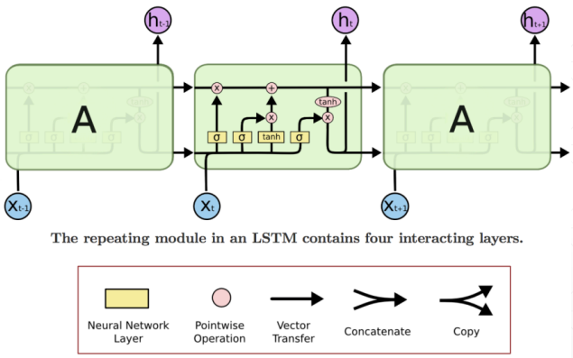
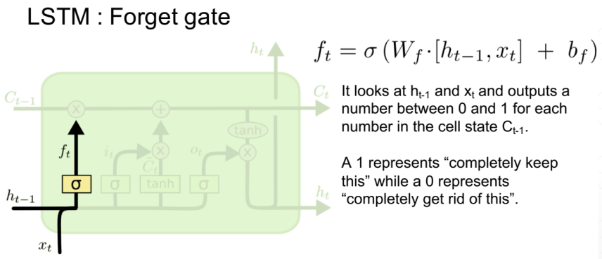
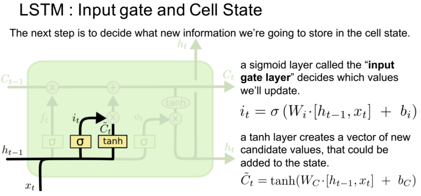
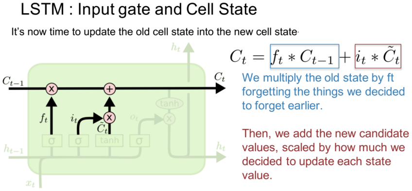
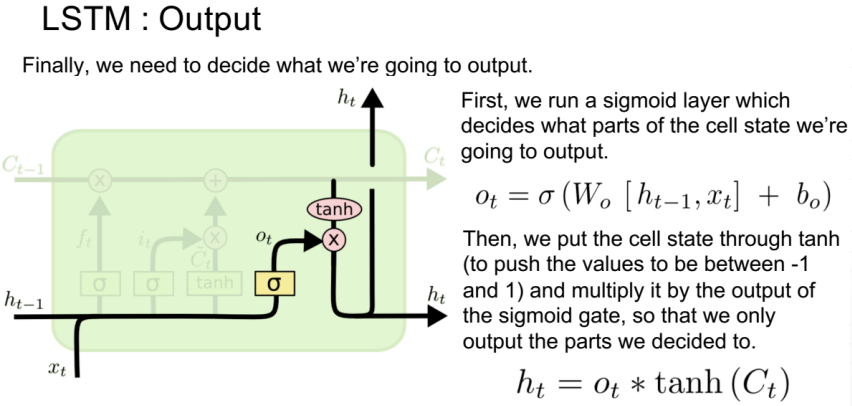
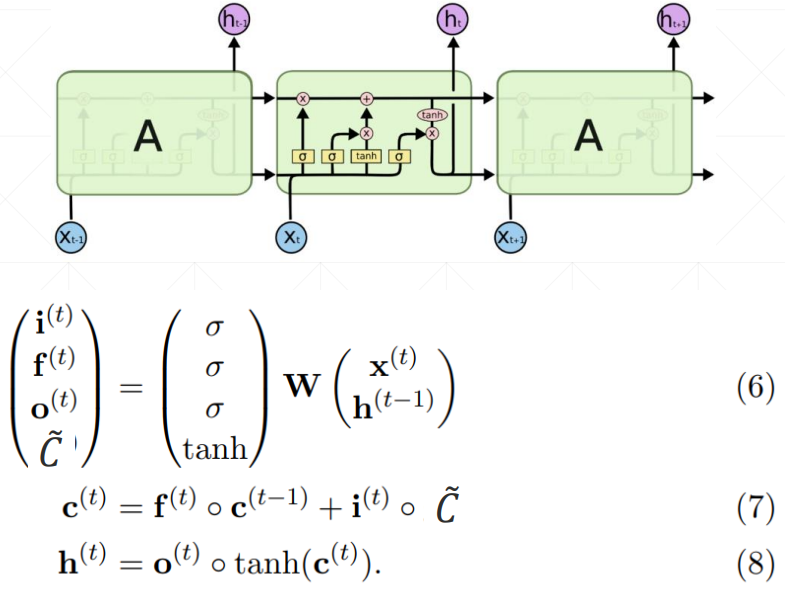
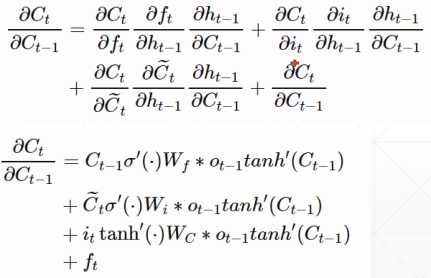
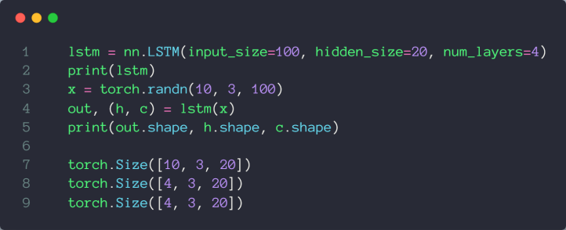

最为关键的点就在于 LSTM 有三个门，遗忘门（forget gate）、输入门（input gate）和输出门（output gate），每个门通过 sigmoid 激活函数（σ）输出 0 或者 1，然后通过 element-wise 的乘积操作，达到筛选信息的目的。

# 遗忘门

选择性的筛选上一步的记忆信息 ，所以叫做遗忘门
# 输入门

将 和 的经过 Sigmoid 激活函数得到输入门，同时， 和 经过 tanh 激活函数得到新的记忆信息，然后和输入门经过 element-wise 的乘积操作，将输入进行选择性的筛选，所以叫做输入门

接下来就是更新上一步的记忆信息 ，通过 element-wise 的相加操作
从这里也可以看出输入门和输出门的状态组合会导致不同的结果
| input gate | forget gate | behavior |
|---|---|---|
| 0 | 1 | remember the previous value |
| 1 | 1 | add to the previous value |
| 0 | 0 | erase the value |
| 1 | 0 | overwrite the value |
# 输出门

# 总体结构图

# 梯度信息
RNN 网络中会有梯度弥散的情况发生，根本原因就是 的连乘，而 LSTM 就很好的解决了这个问题

# 相关 API
参考：LSTM 使用.pdf

# 情感分类实战
参考：情感分类实战.pdf
# -*- coding: utf-8 -*- | |
"""lstm | |
Automatically generated by Colaboratory. | |
Original file is located at | |
https://colab.research.google.com/drive/1GX0Rqur8T45MSYhLU9MYWAbycfLH4-Fu | |
""" | |
!pip install torch | |
!pip install torchtext | |
!python -m spacy download en | |
# K80 gpu for 12 hours | |
import torch | |
from torch import nn, optim | |
from torchtext import data, datasets | |
print('GPU:', torch.cuda.is_available()) | |
torch.manual_seed(123) | |
TEXT = data.Field(tokenize='spacy') | |
LABEL = data.LabelField(dtype=torch.float) | |
train_data, test_data = datasets.IMDB.splits(TEXT, LABEL) | |
print('len of train data:', len(train_data)) | |
print('len of test data:', len(test_data)) | |
print(train_data.examples[15].text) | |
print(train_data.examples[15].label) | |
# word2vec, glove | |
TEXT.build_vocab(train_data, max_size=10000, vectors='glove.6B.100d') | |
LABEL.build_vocab(train_data) | |
batchsz = 30 | |
device = torch.device('cuda') | |
train_iterator, test_iterator = data.BucketIterator.splits( | |
(train_data, test_data), | |
batch_size = batchsz, | |
device=device | |
) | |
class RNN(nn.Module): | |
def __init__(self, vocab_size, embedding_dim, hidden_dim): | |
""" | |
""" | |
super(RNN, self).__init__() | |
# [0-10001] => [100] | |
self.embedding = nn.Embedding(vocab_size, embedding_dim) | |
# [100] => [256] | |
self.rnn = nn.LSTM(embedding_dim, hidden_dim, num_layers=2, | |
bidirectional=True, dropout=0.5) | |
# [256*2] => [1] | |
self.fc = nn.Linear(hidden_dim*2, 1) | |
self.dropout = nn.Dropout(0.5) | |
def forward(self, x): | |
""" | |
x: [seq_len, b] vs [b, 3, 28, 28] | |
""" | |
# [seq, b, 1] => [seq, b, 100] | |
embedding = self.dropout(self.embedding(x)) | |
# output: [seq, b, hid_dim*2] | |
# hidden/h: [num_layers*2, b, hid_dim] | |
# cell/c: [num_layers*2, b, hid_di] | |
output, (hidden, cell) = self.rnn(embedding) | |
# [num_layers*2, b, hid_dim] => 2 of [b, hid_dim] => [b, hid_dim*2] | |
hidden = torch.cat([hidden[-2], hidden[-1]], dim=1) | |
# [b, hid_dim*2] => [b, 1] | |
hidden = self.dropout(hidden) | |
out = self.fc(hidden) | |
return out | |
rnn = RNN(len(TEXT.vocab), 100, 256) | |
pretrained_embedding = TEXT.vocab.vectors | |
print('pretrained_embedding:', pretrained_embedding.shape) | |
rnn.embedding.weight.data.copy_(pretrained_embedding) | |
print('embedding layer inited.') | |
optimizer = optim.Adam(rnn.parameters(), lr=1e-3) | |
criteon = nn.BCEWithLogitsLoss().to(device) | |
rnn.to(device) | |
import numpy as np | |
def binary_acc(preds, y): | |
""" | |
get accuracy | |
""" | |
preds = torch.round(torch.sigmoid(preds)) | |
correct = torch.eq(preds, y).float() | |
acc = correct.sum() / len(correct) | |
return acc | |
def train(rnn, iterator, optimizer, criteon): | |
avg_acc = [] | |
rnn.train() | |
for i, batch in enumerate(iterator): | |
# [seq, b] => [b, 1] => [b] | |
pred = rnn(batch.text).squeeze(1) | |
# | |
loss = criteon(pred, batch.label) | |
acc = binary_acc(pred, batch.label).item() | |
avg_acc.append(acc) | |
optimizer.zero_grad() | |
loss.backward() | |
optimizer.step() | |
if i%10 == 0: | |
print(i, acc) | |
avg_acc = np.array(avg_acc).mean() | |
print('avg acc:', avg_acc) | |
def eval(rnn, iterator, criteon): | |
avg_acc = [] | |
rnn.eval() | |
with torch.no_grad(): | |
for batch in iterator: | |
# [b, 1] => [b] | |
pred = rnn(batch.text).squeeze(1) | |
# | |
loss = criteon(pred, batch.label) | |
acc = binary_acc(pred, batch.label).item() | |
avg_acc.append(acc) | |
avg_acc = np.array(avg_acc).mean() | |
print('>>test:', avg_acc) | |
for epoch in range(10): | |
eval(rnn, test_iterator, criteon) | |
train(rnn, train_iterator, optimizer, criteon) |